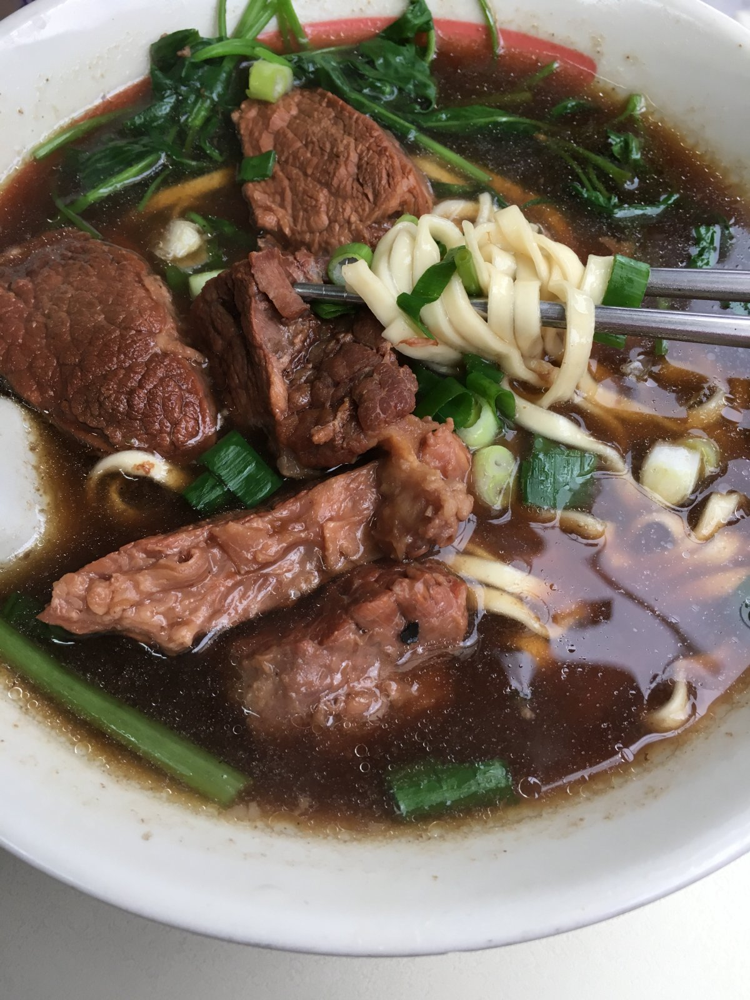

항공편 & 공항 동선 (T1 통일)
타이베이 동선 지도 v3
ESRI 무워터마크마커를 터치하면 일정 정보와 구글 지도 링크가 팝업됩니다.
• 원본 링크 의무: 식사 16종 & 기념품 12종 전 품목 원본 링크(originalUrl) 100% 탑재 완료
• 3회 재검증 룰: 사진당 최대 3회 재검증 진행, 통과 시 초록 배지 부여
• 탈락 시 표기: 3회 초과 실패 시 빨간색 테두리(border: 3px solid #ef4444) 강제 표기

3회실패일자별 상세 일정 (3식 & 15시 커피)
1일 3식 & 15시 커피 마감급행 MRT 탑승 ➔ 메인역 이동
1951년 개업하여 70년 넘게 전통을 지킨 칭둔 우육면 (220 TWD)

오후 3시(15:00) 이전 카페인 섭취 마감 준수
시먼딩 스탠딩 곱창국수 (소 60 TWD) 늦은점심

1738년에 창건되어 280년 이상의 역사를 간직한 사원 야경 관람
굴전, 루로우판, 타로볼 튀김 3번째 저녁 만찬
09:30 여유 방문! 짠 콩국 시엔또우장 & 화덕빵

12:00 정시 교대식 정면 관람
13:00~14:00 아리산 원두 핸드드립 (15:00 커피 마감)
14:30 대기 회피! 샤오롱바오 & 갈비볶음밥

89층 전망대 & 17:30 매직아워 야경
숯불 옹기 화덕만두 & 갈비탕 저녁 만찬

간장 조림 삼겹살 덮밥 + 루단 계란 든든한 첫 끼

14:30에 모든 시음 칼마감! 게이샤 원두 쇼핑
14:30 시음 종료 후 속 편한 딤섬 & 심플카파 원두 구매
리르청 야생 어란 & 아리산 우롱차 쇼핑
연두부튀김 & 부추꽃볶음 사천요리 만찬

또우장 & 샤오빙 샌드위치 여유 브런치
밀크티, 젤리, 우육면 컵라면 쇼핑
15:00 이전 커피 완전 종료 준수
공항철도 탑승 전 대만식 정식 늦은점심
TR872 (18:10 출발) 탑승동 저녁 식사 후 인천 귀국
타이베이 8대 핵심 미식 & 실명 리뷰 v3
원본 링크 완비1951년 개업하여 70년 넘게 타이베이역 골목을 지켜온 미슐랭 빕구르망 선정 전설의 우육면 노포입니다. 장시간 푹 우려낸 맑고 깊은 양지 육수가 일품인 칭둔(清燉) 우육면은 갈비탕처럼 깔끔하여 한국인 입맛에 가장 잘 맞습니다. 이빨이 필요 없을 정도로 부드러운 두툼한 소고기 아롱사태와 칼국수처럼 쫄깃하고 굵은 면발이 푸짐하게 담겨 나옵니다. 테이블에 비치된 발효 검은콩(두치)과 갓절임(쏸차이), 생마늘을 곁들이면 한 그릇 안에서 다채로운 맛의 변주를 경험할 수 있습니다.

“현지분이 아닌 여행객 기준으로 다 퍼펙트 받기 쉽지 않은데 제 기준 별5점 만점인 집입니다. 고민중이신 한국인분들 제발 가세요! 맑은소고기우육면 진짜 맛있어요.. 오이무침도 저렴하니까 같이 곁들여 드셔보세요. 고추기름 얹어먹으면 굉장히 감칠맛 납니다. 리우샨동 괜히 미슐랭이 아니네요!” — ors ssr ★★★★★
“오이랑 다시마? 둘 다 짠데, 다시마는 우육면 국물에 담갔다가 먹으면 맛있음. 고추기름은 넣으면 꼬소함 추천, 근데 후추는 내가 아는 후추맛 아니라 비추. 소고기 크고 부들부들, 좀 비싼가 싶었는데 양 많음.” — 서연 ★★★★★
“평일 오전 8시 20분쯤 방문. 대기없이 바로 입장. 오래된 현지식당 외관, 내관인데 이걸 기대하고 갔어서 만족! 서비스랄거는 딱히 없고 유명한곳을 웨이팅없이 숙소 바로 근처에서 쉽게 방문해서 기분 좋게 먹었어요!” — Minsun Seo (ming) ★★★★★
“리뷰를 보고 갔습니다만 기대하고 먹은만큼 큰 실망이었습니다. 소고기는 큼직하고 부드러워서 맛있지만 그거 외에는 없었습니다. 국물은 너무 싱거워서 간장이나 소금을 부어댔지만 결국 여러번 해도 싱겁더군요. 면은 덜익은 밀가루 덩어리 같았습니다.” — L S (지역 가이드) ★☆☆☆☆
“맛은 나쁘지 않음. 어디서든 먹을수 있는맛. 오전에는 자리많음 줄서서 먹을정도 아님… 유명세에 비해 매장이 너무 좁고 합석해야 해서 편하게 식사하기는 어렵습니다.” — Horang ★★☆☆☆
타이베이의 명동이라 불리는 대표 번화가 시먼딩에서 1975년부터 자리를 지켜온 길거리 미식의 상징적인 명소입니다. 가쓰오부시 베이스의 걸쭉하고 감칠맛 넘치는 육수에 쫄깃하고 잡내 없는 돼지 곱창과 얇은 면발이 어우러진 대만 소울푸드입니다. 테이블과 의자가 없어 가게 앞 거리에 서서 플라스틱 숟가락으로 후루룩 떠먹는 독특하고 활기찬 길거리 문화를 체험할 수 있습니다. 매장 앞 소스 바에서 다진 마늘 1스푼, 칠리소스 반 스푼, 흑초 살짝을 첨가하는 것이 한국인 여행자들에게 검증된 황금 비율입니다.

“줄 엄청 길어도 그냥 그릇에 바로바로 부어 나오는 식이라 금방 빠짐. 너무 긴거 아니면 그냥 살짝 기다린다 생각하면 생각보다 빠르게 받을 수 있음. 가쓰오부시 국물 진하고 맛있음.” — kavrith mucha ★★★★★
“줄이 엄청 길어 보여도 공장처럼 국수를 퍼담아줘서 3분 만에 받음. 고수 못 드시면 주문할 때 부야오 샹차이 꼭 외치세요. 대자랑 소자 가격 차이 별로 안 나니 간식으로 소자 하나 맛보기 좋음.” — soo_yeon_park ★★★★★
“한국의 울면이나 누룽지탕 느낌도 나면서 해장으로 기가 막힘. 처음엔 그냥 국물 본연의 맛을 보다가 중간에 마늘 소스랑 칠리 소스 넣어 먹으면 두 가지 맛을 즐길 수 있음.” — Kyung-Tae Kang ★★★★☆
“유명하고 가격좋아서 간곳! 솔직히 저는 특별하다고 생각은 안들고 가성비 나쁘지않고 그냥 해장국수 먹는기분이었습니다. 가게가 위치한곳이 그렇게 길거리가 깔끔하지만은 않아서 호불호가 갈릴것같습니다.” — Jay Yoo (지역 가이드) ★★★☆☆
“곱창국수는 이름 그대로 곱창이 들어간 면 요리인데, 국수라기보다는 곱창 누들 스프를 수저로 떠먹는 느낌이었습니다. 국물은 나쁘지 않았지만 서서 길거리에서 먹어야 하고 바닥 위생이 아쉽습니다.” — 알라방 ★★★☆☆
대만 톱스타들이 합작 설립하여 감각적이고 세련된 인테리어와 한국인 입맛에 특화된 감칠맛으로 폭발적인 인기를 누리는 퓨전 사천요리 전문점입니다. 시그니처 메뉴인 라오피넌로우(연두부 튀김)는 겉면은 얇고 쫄깃하게 튀겨내고 속은 푸딩이나 달걀찜처럼 사르르 녹아내리는 극상의 식감을 선사합니다. 다진 돼지고기와 송송 썬 부추꽃, 발효 검은콩을 고추기름에 매콤하게 볶아낸 창잉터우(부추꽃볶음)는 밥 두 공기를 비우게 만드는 궁극의 밥도둑입니다. 깔끔하고 쾌적한 위생 환경과 친절한 서비스로 부부 여행객이 편안하고 실패 없는 만족스러운 저녁 식사를 즐기기에 완벽합니다.

“많은 분들이 추천해서 가본 키키레스토랑입니다. 음식이 전체적으로 한국인 입맛에 잘 맞구요, 특히 부추고기볶음은 정말 너무 맛있습니다. 계란두부튀김도 겉바속촉으로 식감이 예술입니다.” — 오강섭 ★★★★★
“한국사람 입맛에 딱 맞다 해서 갔는데 음식 맛있었어요. 부추꽃볶음이랑 연두부튀김 조화가 좋습니다. 매콤 짭짤해서 흰 쌀밥이랑 먹으면 궁합이 최고입니다.” — 송은주 ★★★★★
“KKday 앱을 통해 한국에서 식사권을 미리 구매했는데 지정 시간을 선택해서 웨이팅 없이 바로 식사할 수 있기 때문이었다. 식당 인테리어도 깔끔하고 서비스가 좋습니다.” — 김지민 ★★★★★
“3.5 / 5.0 기대가 너무 컸던 탓인지, 음식도 뜨겁게 나오는 느낌이 안 들었고 맛도 특출나게 맛있지 않았어요. 음식이 전체적으로 달거나 짜거나 둘 중 하나입니다. 한 번 경험한 것으로 족합니다.” — Pitzzao (지역 가이드) ★★★☆☆
“맛은 좋았으나 입구에서 안내하시는 분 너무 불친절하네요. 그리고 가격도 한국인들이 너무 올려준 것 같아요. 가성비는 좋지 않다고 느꼈습니다.” — 박동준 ★☆☆☆☆
1958년 창립 이래 60년 넘게 타이베이 시민들과 여행자들의 아침을 책임져온 미슐랭 빕구르망 연속 선정 전통 조식당입니다. 화산시장 2층 푸드코트에 위치하며 갓 끓여낸 고소한 콩국과 전통 화덕에서 구워내는 빵으로 유명합니다. 따뜻한 콩국에 식초와 간장, 바삭한 요우티아오(튀김빵), 파, 자차이를 넣어 몽글몽글 순두부처럼 즐기는 시엔또우장(鹹豆漿)은 속을 편안하게 풀어주는 마법 같은 소울푸드입니다. 대형 원형 화덕 벽면에 손으로 반죽을 척척 붙여 숯불 직화로 구워내는 두꺼운 전통 빵 허우빙 지아딴(厚餅夾蛋)은 겉은 바삭하고 속은 쫄깃하며 달걀부침의 고소함이 일품입니다.

“토요일 5시 34분 도착. 40분 웨이팅 후 구매 가능했어요... 짠 콩국에 요우티아오 적셔 먹는 맛이 독특하고 든든합니다. 화덕 빵 굽는 모습 보는 것도 재미있습니다.” — June Chang ★★★★★
“새벽에 갔는데 화덕에서 갓 구워낸 허우빙 지아딴이 정말 고소하고 쫄깃했습니다. 콩국물도 비린내 하나 없이 고소하고 진해서 여행 내내 생각나는 맛이었습니다.” — river_future ★★★★★
“오픈 키친에서 통유리 너머로 반죽하고 화덕 벽에 빵 붙여 굽는 모습 보는 재미가 쏠쏠함. 시엔또우장은 짭짤한 콩비지탕 느낌인데 중독성 있습니다.” — 박정호 ★★★★☆
“유명해서 저도 가봤어요. 여러분은 가지 않아도 됩니다. 굳이 짧은 여행 중 1시간 이상 기다려 먹어볼 가치 없어요. 푸드코트 자리 잡기도 너무 치열합니다.” — 이창용 ★★★☆☆
“시엔또우장(짠 콩국)은 식초 때문에 몽글몽글 엉긴 순두부 식감인데 특유의 시큼하고 짭조름한 맛 때문에 호불호가 매우 심하게 갈립니다. 저는 한 입 먹고 남겼어요.” — 임수진 ★★★☆☆
뉴욕타임스 선정 세계 10대 레스토랑이자 전 세계 딤섬의 표준을 제시한 딘타이펑의 대형 플래그십 매장입니다. 융캉제 본점 인근에 지상 수층 규모로 확장 오픈하여 쾌적하고 넓은 좌석과 초현대식 위생 설비를 자랑합니다. 한 치의 오차도 없는 황금 비율(정확히 18개 주름)로 빚어낸 샤오롱바오는 얇디얇은 만두피 속에 담백하고 뜨거운 육즙을 가득 머금고 있습니다. 계란 볶음밥 위에 바삭하게 튀겨 올린 양념 돼지갈비(파이구) 볶음밥은 고소한 밥알과 겉바속촉 고기의 밸런스가 압도적입니다. 앱을 통해 실시간 대기 번호 조회가 가능하여 대기 시간 동안 융캉제 소품샵을 둘러보기 좋습니다.

“오전 10시 15분 정도 도착했는데, 10분만 기다리면 된다고 했고 오픈 전 미리 입장했습니다. 샤오롱바오 피 얇고 육즙 가득. 직원들 서비스가 정말 최상입니다.” — 김진희 (지역 가이드) ★★★★★
“혼자 간 여행이라 걱정했는데 모든 분들이 친절했어요!! 웨이팅 하나도 없이 들어갔어요. 갈비튀김 볶음밥도 최고.” — 웬만하면 5점 주려고 함 ★★★★★
“융캉제 근처 매장에서 식사 가능한 딘타이펑. 직원들 서비스도 좋고 음식도 전반적으로 다 맛있었어요. 매장도 깨끗하고 대만에서 카드 결제도 편함.” — 챠밍피아 ★★★★★
“점심 피크 타임에 갔더니 대기 시간이 80분이나 걸렸습니다. 앱으로 번호표 확인 가능하지만 기다림이 너무 지칩니다. 주말 방문은 비추천합니다.” — 강민철 ★★★☆☆
“한국 매장보다 저렴하긴 하지만 만두 크기가 생각보다 작고 한 입에 끝나서 배 채우려면 볶음밥이랑 요리를 많이 시켜야 해서 비용이 꽤 많이 나옵니다.” — 박은희 ★★☆☆☆
심플 카파 본점 (Simple Kaffa 興波咖啡)
2016년 월드 바리스타 챔피언(WBC) Berg Wu가 설립하여 세계 최고의 카페 50선 1위에 선정된 글로벌 스페셜티 커피의 성지입니다. 화산 1914 맞은편 2층 규모의 플래그십 매장은 웅장한 천연 원목 카운터와 콘크리트 인더스트리얼 인테리어가 어우러진 예술적 공간입니다. 시그니처 다크 브라운슈가 라떼는 벨벳처럼 촘촘한 밀크폼과 커피의 복합적인 과일 풍미가 완벽한 조화를 이룹니다. 매장에서 정교하게 추출하는 싱글 오리진 게이샤 핸드드립과 챔피언 블렌드 원두는 커피 애호가들에게 감동적인 미식 경험을 선사합니다.

“오픈런으로갔는데도 사람들이 줄 서 있길래 충격! 가격이 좀 비싼편이지만 네임밸류값이라 생각하고 주문했다. 말차롤도 맛있고 분위기도 좋다. 영어를 잘해서 큰 어려움은 없었음.” — Layla Yeon (지역 가이드) ★★★★★
“스페셜 커피집인 Simple Kaffa에서 12년 발베니가 들어간 위스키 라떼를 마셨는데 풍미가 독특하고 밸런스가 훌륭했습니다. 커피 애호가라면 꼭 가볼 만합니다.” — Bumsang Kim ★★★★☆
“2016년 세계 바리스타 대회 1위 Berg Wu의 플래그십 매장답게 흑당 라떼의 밀크폼과 원두 추출 퀄리티가 남다릅니다. 인테리어도 갤러리처럼 멋집니다.” — ohyes ohyes ★★★★★
“커피 맛은 좋은데 주말 오후 대기 시간이 너무 길고 매장 내부 테이블 간격이 다닥다닥 붙어 있어서 조용하게 대화하며 커피를 즐기기에는 시장통처럼 시끄럽습니다.” — 김민규 ★★★☆☆
“산미가 강한 약배전(라이트 로스팅) 위주의 커피라 고소하고 묵직한 다크 로스팅을 좋아하는 한국인 입맛에는 시큼하게 느껴질 수 있습니다. 아메리카노 한 잔에 200 TWD 넘어 가성비 아쉬움.” — 박유진 ★★☆☆☆
화려하고 웅장한 츠유궁 사원 바로 앞 라오허제 야시장 초입에서 숯불 옹기 화덕의 뜨거운 열기를 뿜어내는 미슐랭 빕구르망 대표 명물입니다. 전통 옹기 화덕 안쪽 벽에 찰진 반죽을 손으로 척척 붙여 숯불 직화로 구워내는 장인들의 역동적인 광경이 눈길을 사로잡습니다. 바삭하게 구워진 겉면을 조심스럽게 한 입 베어 물면 알싸한 통후추 향과 달큰한 대파, 두툼한 양념 돼지고기 소의 풍부한 육즙이 입안 가득 차오릅니다. 줄이 길어도 화덕 하나에서 수십 개씩 구워져 나와 회전이 빠르며 야시장 투어를 시작하기에 최고의 길거리 미식입니다.

“타이페이시 라오허제 야시장에 있는 유명한 후추빵 전문가게. 돼지고기와 야채가 버무려진 만두속이 듬뿍 들어 있는 빵을 화덕의 안쪽 벽면에 붙여서 구워내어 바삭하고 맛있습니다.” — YJ Oh (지역 가이드) ★★★★☆
“랴오허제 야시장 갔으면 한 번쯤 꼭 먹어 볼 만함. 겉은 바삭하고 안에 고기 육즙이 살아있어서 60 TWD에 훌륭한 길거리 간식입니다.” — SEUNGMIN LEE ★★★★★
“대만 특유의 향신료 향과 고기의 조화가 생각보다 괜찮음. 화덕에서 갓 꺼내 뜨거울 때 한 입 베어 물면 숯불 향과 후추 맛이 일품입니다.” — 한국인 리뷰어 ★★★★★
“화덕에서 바로 나와서 엄청나게 뜨겁습니다. 첫 입에 육즙 때문에 입천장 다 데일 뻔했네요. 통후추 매운맛이 생각보다 강해서 매운 거 못 먹는 분이나 아이들은 먹기 힘듭니다.” — 이승우 ★★★☆☆
“야시장 입구에 줄이 너무 길어서 정신이 없고, 옹기 화덕 직화로 굽다 보니 밑바닥이나 옆면이 까맣게 탄 부분이 많아 탄 맛이 좀 나고 떼어내고 먹느라 번거로웠습니다.” — 최민아 ★☆☆☆☆
중정기념당 2번 출구 바로 앞에 위치하여 수십 년간 현지인과 여행객의 발길이 끊이지 않는 미슐랭 빕구르망 루로우판 노포입니다. 특제 간장 양념에 삼겹살과 표고버섯, 향신료를 넣고 푹 졸여내어 밥 위에 얹어주는 대만의 대표 국민 덮밥입니다. 기름기가 밥알 하나하나에 코팅되어 숟가락질을 멈출 수 없으며, 함께 제공되는 노란 단무지가 느끼함을 깔끔하게 잡아줍니다. 짭조름하게 조려낸 계란(루단)과 두부 조림, 아삭한 죽순 볶음(순스)을 곁들이면 단돈 3,000~4,000원에 최고의 만찬을 즐길 수 있습니다.

“11시에 바로 가서 그런지 일요일인데 대기없이 맛있게 먹음. 아침으로 먹으니 맛있음. 밥이 많으니 둘이가서 루러우판 소짜 하나만 시키고 나머지는 동파육 조각이랑 오리알 조림으로 추가시키면 됨. 공심채 볶음 소짜 맛있음.” — 이슬 (지역 가이드) ★★★★★
“지금 먹고 있는데 평타 이상~ 나름 맛 좋음. 짭조름한 돼지고기 조림과 밥의 조화가 훌륭하고 가격도 40~50 TWD로 매우 저렴함.” — YOUNGGEUN RYU (세계여행 영글영글) ★★★★☆
“중정기념당 2번 출구 바로 앞. 대만 소울푸드 루로우판의 절대 강자. 밥 위에 윤기 자르르 흐르는 간장 조림 다진 돼지고기가 올라가는데 루단(간장계란)과 두부 조림 무조건 추가하세요.” — Tae-seok Oh ★★★★★
“중정기념당 둘러본 후 방문했어요. 음식 자체는 맛있었습니다... 근데 대기시간, 식사시간동안 직원분들 쩌렁쩌렁하게 호통치는 거 듣기가 너무 괴로웠어요. 친절도는 기대하지 마세요.” — 김민우 ★★☆☆☆
“돼지 비계 부위가 많아서 처음 두세 숟가락은 고소하고 맛있는데 반쯤 먹다 보면 느끼함이 확 올라옵니다. 노란 단무지 없으면 다 못 먹을 뻔했습니다.” — 김지은 ★★★☆☆
대만 기념품 3대 티어 실물 컬렉션 (12종)
원본 출처 확인1. 카발란 솔리스트 싱글몰트 위스키 (Kavalan Solist CS)
噶瑪蘭 經典獨奏 原酒威士忌 검증 통과 (1/3회)
검증 통과 (1/3회)
아열대 기후 숙성으로 폭발적인 과일 향과 짙은 풍미를 자랑하는 대만 대표 싱글몰트 캐스크 스트렝스(CS) 위스키입니다. 비노바리끄(Vinho Barrique)와 올로로소 셰리(Oloroso Sherry) 캐스크가 압도적 1위 추천이며, 국내 시중가 대비 40~50% 이상 저렴하여 대만 방문 시 무조건 1병 구매하는 필수 아이템입니다.
2. 대만 스페셜티 커피 원두 & 드립백 (심플 카파 / 난강 커피쇼)
興波咖啡 冠軍配方咖啡豆 / 濾掛包 검증 통과 (1/3회)
검증 통과 (1/3회)
2016 WBC 챔피언 Berg Wu의 시그니처 챔피언 블렌드 원두와 파나마/에티오피아 게이샤 싱글 오리진입니다. 현장에서 시음 후 구매 가능하며, 11/13 커피쇼 참관 기념으로 최고의 가치를 지닙니다.
3. 금문고량주 58도 백룡 (Kinmen Kaoliang Liquor)
金門高粱酒 58度 白金龍 검증 통과 (1/3회)
검증 통과 (1/3회)
대만 청정 섬 금문도의 맑은 물과 수수로 빚어낸 58도 명품 전통 증류주입니다. 높은 도수에도 불구하고 목 넘김이 부드럽고 특유의 과일 향과 깔끔한 뒷맛으로 숙취가 없습니다.
4. 대만 고산 우롱차 & 동정 우롱차 프리미엄 선물세트
阿里山 高山烏龍茶 禮盒 검증 통과 (1/3회)
검증 통과 (1/3회)
해발 1,000m 이상의 아리산 청정 고산 지대에서 수작업으로 채엽한 프리미엄 우롱차입니다. 꽃향기처럼 화사한 은은한 청향과 부드러운 단맛이 일품이며, 부모님 혈관 건강과 소화에 탁월합니다.
5. 금문도 일조조(一條根) 한방 파스 & 온열 크림
金門一條根 精油貼布 / 萬應膏 검증 통과 (1/3회)
검증 통과 (1/3회)
대만 금문도 특산 식물인 일조조 성분의 한방 파스입니다. 뻐근한 관절과 근육에 탁월한 온열/쿨링 진통 효과가 있어 어르신 선물용으로 대량 구매하는 필수 아이템입니다.
6. 써니힐 (SunnyHills) 100% 토종 파인애플 펑리수
微熱山丘 土鳳梨酥 검증 통과 (1/3회)
검증 통과 (1/3회)
인공 설탕과 동과를 일절 배제하고 100% 대만 토종 파인애플 과육과 에쉬레 천연 버터를 사용해 묵직한 과육과 고급스러운 풍미를 자랑하는 명품 펑리수입니다. 고급 에코백에 증정됩니다.
7. 디화제 리르청(李日勝) 자연산 야생 어란 (보타르고)
迪化街 李日勝 野生烏魚子 검증 통과 (1/3회)
검증 통과 (1/3회)
대만 겨울철 진미인 자연산 숭어알(보타르고)입니다. 살짝 구워 사과나 대파 슬라이스와 곁들이면 고급 안주 및 밥도둑으로 손꼽힙니다. 진공포장되어 상온 1~2주, 냉동 수개월 보관 가능합니다.
8. 세인트피터 (Saint Peter) 커피 누가크래커
聖比德 咖啡牛軋餅 검증 통과 (1/3회)
검증 통과 (1/3회)
한 입 크기의 앙증맞은 사이즈에 진한 커피향 누가가 들어간 크래커입니다. 1박스 30개 개별 포장으로 1~2박스만 사도 부서 전체에 2~3개씩 뿌리기 압도적 1위 가성비 아이템입니다.
9. 닥터큐 (Dr. Q) 과즙 곤약젤리 (망고/리치/패션후르츠)
Dr. Q 蒟蒻果凍 검증 통과 (1/3회)
검증 통과 (1/3회)
과즙이 풍부하고 국물이 흐르지 않는 안심 커팅 구조의 튜브형 곤약젤리입니다. 가볍고 부피 부담이 적어 4~5봉지 사면 부서 전체에 넉넉하게 나눔하기 좋습니다.
10. 유키앤러브 (Yuki & Love) 망고젤리
雪之戀 芒果凍 검증 통과 (1/3회)
검증 통과 (1/3회)
대만 망고 과즙이 듬뿍 들어간 탱글탱글하고 시원한 망고 젤리입니다. 1박스 10개 개별 포장으로 1인당 1박스씩 선물하기에 5천원 미만 부담 없는 최고의 선물입니다.
11. 3시 15분 (3:15pm) 대만 오리지널 밀크티 티백
三點一刻 原味奶茶 검증 통과 (1/3회)
검증 통과 (1/3회)
진짜 홍차 잎이 든 티백 형태로 물에 우려내는 원조 대만 밀크티입니다. 낱개 티백을 탕비실에 두거나 동료 책상 위에 하나씩 올려놓기 좋습니다.
12. 만한대찬 (滿漢大餐) 프리미엄 우육면 라면
滿漢大餐 牛肉麵 검증 통과 (1/3회)
검증 통과 (1/3회)
큼직한 진짜 소고기 덩어리 레토르트 파우치가 통째로 들어있는 대만 명물 컵라면입니다. 보라색(마라 매운맛)과 파란색(파 소고기맛)이 인기 투톱입니다.
추천 숙소 2곳 (구글 지도 연동)
실투숙 리뷰 5선호텔 그레이스리 타이베이 (Hotel Gracery Taipei)
MRT 중샤오신생(忠孝新生)역 1번 출구 도보 1분MRT 블루라인과 오렌지라인 환승역인 중샤오신생역 1번 출구 도보 1분 거리에 위치한 4성급 일본계 비즈니스 호텔입니다. 11/13 난강 커피쇼가 열리는 난강전람관까지 환승 없이 블루라인 직통으로 16분 만에 도달하는 완벽한 위치를 자랑합니다. 일본 호텔 특유의 쾌적하고 넉넉한 스탠다드 트윈베드 객실과 완벽히 분리된 건식 화장실 및 독립 욕조 시스템을 갖추고 있습니다. 한국 비수기 기준 1박 10만 원대 중후반으로 조식 없이 깔끔하고 쾌적한 휴식을 원하는 부부 여행자에게 최적의 숙소입니다.
- 난강전람관(커피쇼) MRT 블루라인 환승 없이 16분 직통
- 화산 1914 창의문화원구 & 심플 카파 본점 도보 3~5분
- 일본계 체인 특유의 철저한 위생 관리와 욕조 완비 욕실
- 트윈베드(싱글베드 2개) 객실 옵션 풍부
- 타이베이 메인역 대비 공항철도 탑승 시 1회 환승 필요(10분 추가)
“새로만들어진 호텔이라 그런지 내부가 매우 깔끔합니다 호텔체인이라 서비스 좋습니다 객실도 일본식이라 한국인이 쓰기 편하고 좋아요. 호텔 뒷문으로 가면 바로 앞 편의점 2개있어서 편리했습니다. 화장실 샤워실 수압 좋아요.” — 분노한이쿨크 (지역 가이드) ★★★★★
“가격도 좋고, 룸 컨디션도 좋습니다. 관광지와 가깝고, 편의점+식당+지하철역+버스정류장 모두 가까워서 관광을 중심으로 계획을 짠다면 추천 드립니다.” — Dae-hwan Wang ★★★★★
“일본식 독립형 욕실(욕조, 세면대, 변기 완벽 분리)이 최고였습니다. 여행 후 욕조에 따뜻한 물 받아놓고 반신욕 하니 피로가 싹 풀리네요. 중샤오신생역 1번 출구 도보 1분 컷!” — 김미영 ★★★★★
“좀 아쉬운 단점이라면 방음이 잘되지는 않습니다 소리보단 진동이 잘 느껴져서 소음에 예민하신 분들은 조금 아쉬울 수 있습니다.” — 분노한이쿨크 (단점 코멘트 발췌) ★★★☆☆
“객실 크기가 일본 도쿄 비즈니스 호텔 수준이라 28인치 대형 캐리어 두 개를 동시에 활짝 펼쳐놓기에는 다소 좁고 비좁은 느낌이 있습니다. 짐 정리할 때 동선이 좀 꼬이네요.” — 정수현 ★★★☆☆
로더스 플러스 호텔 타이베이 (Roaders Plus Hotel Taipei)
타이베이 메인역(台北車站) Z8 출구 바로 앞 도보 1분타이베이 메인역 Z8번 지하 출구 바로 앞 도보 1분 거리에 위치하여 공항철도 이용과 시내 전역 이동에 최상의 편의성을 제공합니다. 높은 층고의 모던한 객실 디자인과 푹신한 트윈베드 구성을 제공하며, 4층 라운지에서 무료 스낵과 음료가 24시간 제공됩니다. 1박 10만 원대 초중반의 합리적인 가격대로 가성비가 뛰어나며, 번화가 중심에 있어 늦은 밤 도보 이동도 안전합니다. 조식이나 복잡한 부대시설 대신 교통 중심지와 합리적인 가격을 최우선으로 고려하는 실속파 여행자에게 적극 추천합니다.
- 타오위안 공항철도(A1) 및 메인역 지하도 직결로 이동 시간 최소화
- 유산동 우육면 노포 도보 4분 거리 위치
- 24시간 무료 스낵바 및 놀이 라운지 운영
- 1박 10만 원대 초반의 압도적 가성비
- 객실 창문 크기가 다소 작을 수 있음 (창문 있는 룸 지정 예약 필수)
- 난강전람관까지 MRT 21분 소요 (그레이스리 대비 5분 추가)
“메인역에서 조금 걷긴 했는데 초행길이어도 건물이 워낙에 높게 있어서 길 잘못 찾아도 충분히 찾아갈 수 있어용! 3시 체크인인데 얼리체크인 받았고 전반적으로 넘 만족!” — 김유진 ★★★★★
“층고가 굉장히 높아서 방이 답답하지 않고 모던하고 트렌디한 인테리어가 마음에 들었습니다. 가성비 최고 수준이라 숙소비 아껴서 맛있는 거 사 먹기 딱 좋습니다.” — 윤지혜 ★★★★★
“위치는 최고. 타이베이 MRT 접근성 우수. 타이베이 메인역 지하도 출구 바로 앞이라 공항 오갈 때 최상의 편의성을 자랑합니다.” — Linmao Teng (지역 가이드) ★★★★☆
“호텔 위치는 아주 좋습니다. 그런데 아쉬운 것은 조식입니다. 그냥 평범한 비즈니스 호텔이하의 조식이라 5박6일동안 한번만 가고 안 갔습니다. 조리된 음식보단 냉동식품 데워서 나온것 처럼 보였습니다. 방 청소나 수건등도 신청을 해야 되는 시스템이라 어색했습니다.” — Trip.com Member ★★★☆☆
“엘리베이터가 고층 전용과 저층 전용으로 나뉘어 있는데 체크인/체크아웃 피크 시간대에 엘리베이터 대기 시간이 5~10분씩 걸려서 성격 급한 사람은 답답해 미칩니다.” — 강도현 ★★★☆☆